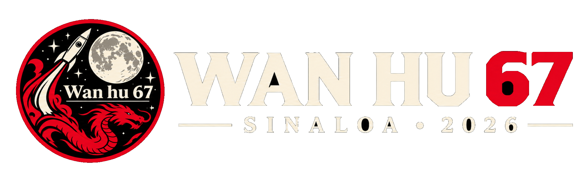

Empuje
Fuerza que impulsa el cohete al expulsar masa en sentido contrario. Se relaciona con la tercera ley de Newton: acción y reacción.
ΣF = m · aBITÁCORA DE MISIÓN · RETO F1025B
万户 · 探索始于好奇
WAN HU 67 es un proyecto aeroespacial de Rocket Tec que integra experimentación, modelado físico y análisis de vuelo. Una misión para convertir preguntas en datos y datos en decisiones de ingeniería.
T-MENOS · CUENTA REGRESIVA
La fecha oficial aparecerá cuando el equipo confirme la ventana de lanzamiento.
01 / PROPÓSITO
TEC DE MONTERREY · CAMPUS SINALOA
El reto consiste en diseñar, observar y comprender el comportamiento de un sistema aeroespacial. Cada prueba aporta evidencia; cada modelo ayuda a interpretar lo que sucede durante el vuelo.
Entender la física ↗02 / ORIGEN DEL NOMBRE
INSPIRACIÓN · CHINA, DINASTÍA MING
Nombre asociado a una antigua leyenda china sobre el sueño de volar hacia el cielo.
火箭 · 探索¿QUIÉN FUE WAN HU?
Wan Hu es el protagonista de una leyenda popular que suele situarse en la China de la dinastía Ming. La narración cuenta que imaginó una silla voladora impulsada por cohetes y acompañada por cometas.
La historia no está confirmada como un acontecimiento histórico. La NASA la presenta como una leyenda. Para WAN HU 67, su valor está en el símbolo: la curiosidad humana por explorar, experimentar y mirar más allá de lo conocido.
“Consultar guía educativa de NASA ↗No heredamos una hazaña comprobada; retomamos una idea poderosa: imaginar cómo llegar más lejos.
03 / FENÓMENOS FÍSICOS
FUERZAS · MOVIMIENTO · AERODINÁMICA
El vuelo resulta de fuerzas que cambian con el tiempo. Comprenderlas permite interpretar la trayectoria, estimar el apogeo y evaluar el comportamiento del vehículo.
Fuerza que impulsa el cohete al expulsar masa en sentido contrario. Se relaciona con la tercera ley de Newton: acción y reacción.
ΣF = m · aLa gravedad atrae el vehículo hacia la Tierra. Su efecto compite con el empuje durante el ascenso.
P = m · gEl aire se opone al movimiento. La forma, el área frontal, la velocidad y la densidad del aire influyen en su magnitud.
Fᵈ ∝ ρ · v²Las fuerzas aerodinámicas laterales y la orientación afectan la trayectoria. La estabilidad ayuda a mantener una actitud de vuelo controlada.
FUERZAS → TRAYECTORIAEl apogeo es el punto de mayor altitud. Durante el descenso, el sistema de recuperación aumenta la resistencia del aire y reduce la velocidad vertical.
vᵧ ≈ 0 · APOGEOREFERENCIA TÉCNICA NASA Glenn — Four Forces on a Rocket ↗
04 / INGENIERÍA APLICADA
MÉTODO · SIMULACIÓN · VALIDACIÓN
INGENIERÍA EMPÍRICA
La primera fase parte de la observación y la experimentación: pruebas de paracaídas, registro de resultados y ajustes sustentados en evidencia.
INGENIERÍA PREDICTIVA
La segunda fase integra modelos físicos y herramientas de simulación para estimar el desempeño y contrastar predicciones con observaciones.
Representar el movimiento y analizar escenarios con variables físicas.
Visualizar el comportamiento del aire alrededor de la geometría diseñada.
Conectar diseño, pruebas, recuperación, registro y evaluación.
05 / MÉTRICAS DE LANZAMIENTO
INDICADORES · RESULTADOS POR REGISTRAR
Estos indicadores forman la ficha de evaluación de la misión. Los valores se actualizarán cuando existan mediciones verificadas del ensayo o del lanzamiento.
!No se presentan cifras estimadas como mediciones reales. La comparación entre el modelo y el vuelo se añadirá al contar con datos del proyecto.
06 / RESULTADOS ESPERADOS
El éxito académico también está en documentar el proceso, entender las diferencias y explicar con evidencia qué aprendimos.
Construir un registro de los indicadores relevantes de la trayectoria.
Comparar predicciones físicas con las observaciones disponibles.
Analizar el comportamiento del descenso y la recuperación del vehículo.
Conservar decisiones, supuestos, resultados y oportunidades de mejora.
07 / IDENTIDAD VISUAL
El emblema y el logotipo oficiales se conservan como fueron proporcionados: cohete, luna y dragón son el sello gráfico de la misión.

08 / TRIPULACIÓN
ROCKET TEC · CAMPUS SINALOA
Propuesta inicial de distribución de responsabilidades. Los roles pueden ajustarse para reflejar las tareas y acuerdos reales del equipo.
Desarrollo del diseño tridimensional y análisis del comportamiento aerodinámico mediante herramientas de simulación.
Desarrollo y análisis de modelos físicos y escenarios de movimiento en MATLAB.
Coordinación de la integración entre subsistemas, seguimiento de pruebas y verificación de avances.
Organización de mediciones, bitácora de pruebas y análisis de indicadores de vuelo.
Integración de documentación técnica, presentación de resultados y comunicación visual.
✳ Los roles son una propuesta editable, no una asignación oficial confirmada.